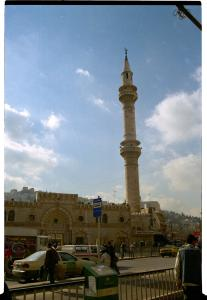

|
Lundi 5 février, Amman
Après une rapide escale à Vienne, nous arrivons à Amman à
15 H. Cela cafouille un peu a l'aéroport, on voit deux ou
trois personnes avant de trouver celui qui veut bien tamponner
nos visas. Il n'y a pas de pression autour de nous, à peine
une personne qui nous propose un taxi, on refuse, il part.
Juste devant l'aéroport, on tombe sur un bus, il nous emmène
vers la ville, à Abdalli Station pour 1.5 JD (soit 15 FF).
L'aéroport se trouve à une trentaine de Km de la ville. Arrivés
à Abdalli Station, il faut encore aller vers le downtown,
le centre ville, qui se trouve plus bas encaissé dans des
collines. La ville est grande, il y a des voitures partout,
des bus, des taxis jaunes, d'autres blancs. On est un peu
perdu, on demande alors notre chemin à un gars en uniforme
qui trône dans une guérite. Mais il ne parle pas un mot d'anglais!
Des gamins nous emmènent vers un anglophone qui nous explique
tout: il faut prendre un taxi " service ", ce sont les blancs
et pas les jaunes. A la différence des jaunes qui sont les
vrais taxis, les " services " ne partent que quand ils sont
pleins et font un trajet fixe. Le prix est de 10 piastres
chacun (1FF). On lui montre les pièces que nous avons parce-qu'il
n'est pas facile de s'y retrouver: il y a les dinards, les
piastres et les fils (100 piastres=1000 fils=1 dinard). Comme
on vient d'arriver, on n'a que des gros sous. Alors notre
interlocuteur nous donne l'argent pour le taxi!!! Quelle hospitalité
! Et il demamde aux gamins de nous conduire de l'autre côté
de la place et d'arrêter un de ces fameux " services ". Mais
tout le monde n'est pas aussi généreux et les gamins nous
demandent un backchich!
Après 5 minutes de descente, le service nous dépose dans
le centre où on se perd pendant un bon quart d'heure! Il faut
dire que le plan du routard n'est pas des plus précis et qu
certaines rues n'ont pas de nom ou bien ils ne sont écrits
qu'en arabe! (facile non!). On lira par contre que certaines
rues possèdent 3 noms! Bref, on cherche le Cliff hôtel, on
ne le trouve pas et on se fait accoster par le proprio du
Baghdad hôtel dans la rue. On voit les chambres, pas mal,
elles valent 4 JD... l'affaire est faite.
Le soir on se fait accoster par Saad qui devine que nous
sommes français à cause du Routard. Il est franchement marrant,
parle de tout et rien, saute du coq à l'âne et jongle entre
l'anglais et l'italien (il a habité en Italie assez longtemps
et maîtrise vraiment bien cette langue). On va avec lui dans
un coffe shop. Rien à voir avec ceux d'Amsterdam. Ici on boit
du thé et on fume le narguilé (ou la " shisha "), une pipe
à eau, un long tube dans lequel on aspire et du tabac aromatisé
aux fruits (fraise ou pomme par exemple). Les gens (les hommes
devrais-je dire) y jouent aux cartes ou au baggamon. Marion
gagne 2 parties contre Saad. Affamée par son succès, on va
dans un resto, conduits par Saad, où l'on découvre la délicieuse
cuisine jordanienne. Beaucoup de salades, du taboulé (pas
le même qu'en France, il s'agit de tomates, de blé concassé
et de persil haché) des falafels (croquettes de pois chiches
frits), des kebabs, un excellent pain plat appelé " chirac
" (si!si!) et de l'hommos (une purée de pois chiche avec de
l'huile d'olive).
Suite du voyage : La visite de Jerash
|
Jordanie
Amman
|

Jordanie
Amman
|
|
|